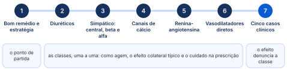
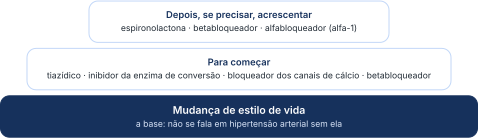
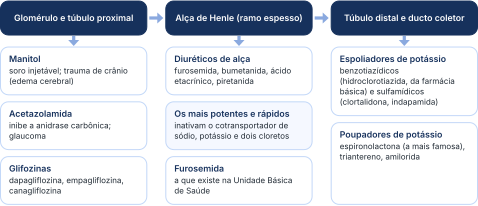
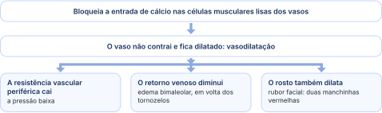
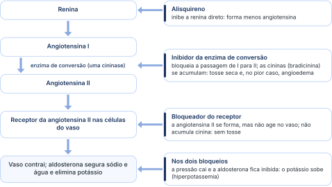
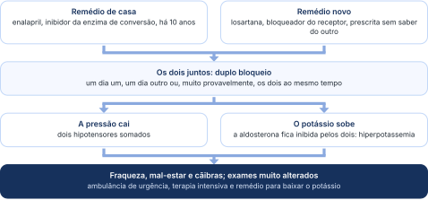

Proibido
Inibidor da enzima de conversão: faz fechamento precoce das cartilagens do feto e malformações renais e fetais.
As classes de anti-hipertensivos (como agem, o que causam e quando evitar) e cinco casos reais de efeito colateral para não errar na prescrição.
Organizada a partir da aula expositiva e do seminário de casos clínicos de 28 de outubro de 2026, continuação da Aula 7 (hipertensão arterial sistêmica). A legenda de cores está na página 2.

Do remédio ideal às classes, uma a uma, e aos casos em que o efeito colateral denuncia o remédio.
Em palavras simples: remédio de pressão bom funciona por boca, tem poucos efeitos, é tomado uma vez ao dia e comprovadamente evita derrame, infarto e perda do rim. A base continua sendo mudar o estilo de vida; o remédio entra por cima, um só ou em dupla, conforme o quanto a pressão está alta e o perfil do paciente.
Tempo mínimo de uso do anti-hipertensivo na dose em que começou.
Nos estágios 2 e 3, o bom anti-hipertensivo é pensado em associação: os remédios funcionam de mãos dadas uns com os outros. Quando o paciente não melhora com um só, eles são associados entre si. E tratar a hipertensão não é só baixar o número: é evitar lesão de órgão-alvo.

Da base para o topo: o estilo de vida sustenta tudo; os remédios entram por cima.
A base da pirâmide é a mudança de estilo de vida. Por cima dela, o tratamento pode começar com tiazídico, inibidor da enzima de conversão, bloqueador dos canais de cálcio ou betabloqueador. Depois, se a pressão não controlar, entram a espironolactona, o betabloqueador e os alfabloqueadores (bloqueadores alfa-1).
“Não se fala, de novo, em hipertensão arterial sem falar em mudança de estilo de vida.”
Reduzir a taxa de acidente vascular cerebral, de doença arterial coronariana, de insuficiência cardíaca e de doença renal crônica. Este é o foco do tratamento da hipertensão arterial.
Tratar com um anti-hipertensivo só (monoterapia) é o ideal, mas nem todo paciente consegue. A novidade: com pressão entre 130 e 139 por 80 e 89 mmHg, dá para começar em monoterapia com qualquer uma das classes anti-hipertensivas.
Fora desses perfis, o estágio 1 geralmente já começa com dois medicamentos. Nos estágios 2 e 3, os remédios vão sendo acoplados, até a polifarmácia do estágio 3: mais de quatro ou cinco anti-hipertensivos ao mesmo tempo.
Com exceção do inibidor direto da renina, o alisquireno (“um remédio que não veio para mudar a história”), todas as classes estão no Sistema Único de Saúde: basta a receita e ir buscar no posto. Com tudo disponível, o controle da pressão deveria ser melhor; mesmo assim, há pacientes tendo derrame e infarto.
“O que está acontecendo? Não é só ter o remédio no posto: é tomar o remédio do posto e mudar estilo de vida.”
Em palavras simples: diurético faz o rim perder mais sódio e água pela urina. Cada tipo age num trecho do túbulo do rim, e é esse lugar que define a força, os efeitos e o uso: do manitol do trauma de crânio à furosemida do paciente inchado.
O diurético aumenta o fluxo urinário porque reduz a capacidade do túbulo de reabsorver sódio e água; isso pode até elevar a taxa de filtração glomerular.
Os diuréticos são classificados pelo local onde agem: glomérulo, túbulo proximal, alça de Henle, túbulo distal e ducto coletor.

Os diuréticos pelo lugar onde agem, na ordem em que o filtrado percorre o túbulo.
Os locais de reabsorção de cada trecho do túbulo são os das aulas do Dr. Guilherme. O diurético é dado para inibir a reabsorção de sódio e água: saber onde ela acontece é saber onde cada diurético age.
A albumina também é considerada um diurético desse grupo, mas os mais importantes são esses três.
Os quatro remédios que hoje são os pilares do tratamento da nefropatia do diabetes, o “quarteto fantástico” em que entram as glifozinas, são assunto da aula de diabetes da semana seguinte.
Os diuréticos de alça agem no ramo espesso da alça de Henle e tornam inativo o cotransportador de sódio, potássio e dois cloretos. São os mais potentes e os mais rápidos.
Em palavras simples: estes remédios baixam a pressão freando o sistema nervoso simpático, o “acelerador” do corpo: no cérebro (ação central), no coração (betabloqueadores) ou nos vasos (alfabloqueadores). Cada grupo tem um efeito colateral típico, e é ele que o paciente vai contar no consultório.
Os bloqueadores adrenérgicos de ação central estimulam receptores alfa-adrenérgicos no tronco encefálico. Isso inibe a ação simpática e diminui a resistência vascular periférica.
“Tratamento de hipertensão passa pela gente entender fisiologia. Se nós não entendermos a fisiologia da hipertensão, a gente não sabe prescrever o melhor remédio.”
“Remédio da pressão tira o vigor sexual.” Muitos pacientes de 60 anos ou mais recusam o tratamento por isso. Entre as classes de anti-hipertensivos, só a de ação central diminui a atividade sexual; todas as outras não interferem. Lembre disso ao prescrever e ao conversar com o paciente.
Pode ser usada na gestante e é, inclusive, a preferida na gestação.
Vasodilatador de ação central: dá essencialmente boca seca e diminui um pouco a atividade sexual, mas controla muito bem a pressão.
A boca seca da clonidina é o caso 1 do seminário (capítulo 07).
Ainda dentro dos bloqueadores adrenérgicos, os betabloqueadores diminuem o débito cardíaco e a secreção de renina.
Os alfabloqueadores (bloqueadores alfa-1) têm efeito hipotensor discreto a longo prazo. Mas, no efeito de primeira dose, causam vertigem, fraqueza e cefaleia: nos primeiros dias de uso, o paciente faz hipotensão ortostática e fica com a sensação de estar “mole”.
São úteis no paciente prostático (hiperplasia prostática benigna), porque diminuem o tônus da próstata, e na hipertensão leve a moderada. Exemplos: doxazosina, prazosina e terazosina.
Acrescentar doxazosina sem olhar a pressão. Ao tratar a hiperplasia prostática benigna do idoso com doxazosina, é preciso monitorizar a pressão arterial; senão ele faz hipotensão, pode desmaiar e cair. É o caso 2 do seminário.
Em palavras simples: sem cálcio entrando na célula do músculo do vaso, o vaso não contrai e fica dilatado, e a pressão cai. O preço é um inchaço em volta dos tornozelos que assusta o paciente: é efeito do próprio remédio, e explicar isso é o que impede que ele abandone o tratamento.
Os antagonistas (ou bloqueadores) dos canais de cálcio reduzem a resistência vascular periférica diminuindo a concentração de cálcio nas células musculares lisas dos vasos. Bloqueada a entrada de cálcio, não há contração vascular, e os vasos ficam dilatados.

Exatamente por dilatarem os vasos, eles fazem edema bimaleolar: um inchaço em volta dos maléolos, porque a vasodilatação diminui o retorno venoso. Todos os remédios da classe fazem (é efeito de classe). É um efeito natural da droga e vai desaparecendo com o uso crônico.
“— Eu não quero mais tomar aquele remédio que a senhora me deu, porque depois que eu comecei a tomar eu fiquei inchado.
— Não! O senhor não ficou inchado, o senhor ficou vasodilatado. E graças a Deus: tudo o que ele está fazendo no seu tornozelo, ele está vasodilatando o seu coração.”
Tratar o inchaço como problema e deixar o paciente parar o remédio. Se o médico não souber explicar ao paciente e convencê-lo da importância de tomar o remédio, ele vai parar de tomar.
Entre as di-hidropiridinas, cada indústria farmacêutica mudou um detalhe da molécula e pôs o seu nome: fazem a mesma coisa.
Edema maleolar, cefaleia, tontura, rubor facial (a mesma vasodilatação do coração e da periferia chega ao rosto) e, em alguns casos, depressão miocárdica.
Em palavras simples: o sistema renina-angiotensina-aldosterona produz a angiotensina II, que contrai os vasos, e a aldosterona, que segura sódio e água e elimina potássio. Bloqueá-lo baixa a pressão e protege o rim, mas tem preços que o paciente precisa conhecer: tosse, potássio alto e proibição na gravidez.

Onde cada classe bloqueia o sistema e o que acontece depois.
Bloqueiam a conversão de angiotensina I em angiotensina II, ou seja, inibem o sistema renina-angiotensina-aldosterona. A enzima que faz essa conversão é uma cininase: bloqueada, as cininas (bradicinina) aumentam, e esse aumento das cininas circulantes é alergênico.
É o efeito colateral mais comum da classe: uma tosse seca, curta e repetida. Pode evoluir para reação anafilactoide e até edema angioneurótico (angioedema); o edema de glote pode ser fatal.
“Eu vou lhe prescrever um remédio que vai proteger o seu rim, vai proteger o seu coração, vai baixar a pressão. Mas, se o senhor começar a ter tosse com ele, pare de tomar e vá para o pronto-socorro.”
Inibido o sistema, a aldosterona também fica inibida. E o que a aldosterona faz? Absorve sódio e água e elimina potássio. Sem ela, o potássio fica retido: o inibidor da enzima de conversão causa hiperpotassemia (hipercalemia). O bloqueador do receptor da angiotensina II faz o mesmo, pela mesma razão.
Somar os dois bloqueios. Inibidor da enzima de conversão junto com bloqueador do receptor soma a queda da pressão e soma o potássio alto. É o caso 4 do seminário.
Inibidor da enzima de conversão: faz fechamento precoce das cartilagens do feto e malformações renais e fetais.
Alfametildopa (a preferida), bloqueadores dos canais de cálcio e hidralazina.
Os inibidores da enzima de conversão são nefroprotetores: melhoram a lesão glomerular causada principalmente pela hipertensão e pelo diabetes, reduzindo a pressão dentro do glomérulo. Por isso podem e devem ser usados nessas duas doenças; no diabetes, reduzem inclusive a proteinúria.
O primeiro da classe é o captopril (Capoten). Há também enalapril (Renitec), benazepril, lisinopril, ramipril, fosinopril e quinapril.
Dentro de uma classe, os efeitos colaterais são os mesmos: não importa qual inibidor da enzima de conversão você prescreva, o efeito colateral vai ser o mesmo. Vale igual para os bloqueadores dos canais de cálcio (todos fazem edema bimaleolar) e para os bloqueadores do receptor (nenhum é melhor que o outro).
Aqui a angiotensina II é produzida (diferente do inibidor da enzima, que impedia o aparecimento dela), mas não age sobre as células dos vasos, porque o receptor dela (tipo 1) está bloqueado. Como as cininas não sobem, não há a tosse dos inibidores da enzima de conversão.
Também são nefroprotetores na nefropatia diabética, da mesma maneira: protegem o endotélio vascular do glomérulo da esclerose da hipertensão e da esclerose do diabetes. Exemplos: losartana (Cozaar), irbesartana, olmesartana (Benicar), valsartana (Diovan, Tareg), candesartana e telmisartana. Todos têm o mesmo efeito cardiovascular: dentro da classe, nenhum é melhor que o outro.
O inibidor direto da renina, o alisquireno, age inibindo a renina e diminuindo a formação de angiotensina. Lançado há uns 15 anos como a melhor medicação que ia existir para a hipertensão, tem preço elevado e não se mostrou melhor do que o inibidor da enzima de conversão nem do que o bloqueador do receptor, nem em desfecho cardiovascular, nem na evolução para insuficiência renal. É o menos importante da aula e o único que não está no Sistema Único de Saúde.
Em palavras simples: relaxam diretamente o músculo da parede das arteríolas, e a pressão cai. O corpo reage acelerando o coração e segurando líquido; por isso eles andam sempre acompanhados de diurético e betabloqueador. Cada um tem um efeito curioso: o minoxidil faz crescer cabelo e a hidralazina imita o lúpus.
Promovem o relaxamento direto das células musculares lisas: vasodilatação arteriolar, queda da resistência vascular periférica e aumento do débito cardíaco.
Devem ser usados em associação com outros anti-hipertensivos.
Um pouco de edema, pela pressão hidrostática; retenção hídrica; taquicardia reflexa.
Diurético e betabloqueador.
O minoxidil (Loniten) é, sim, um anti-hipertensivo. Homens com algum tipo de alopecia, tratados da hipertensão com minoxidil, começaram a ter crescimento capilar (hipertricose). Era um efeito colateral; estudou-se então o efeito reverso, e viu-se que a vasodilatação periférica acontecia também no couro cabeludo. Por isso o minoxidil em loção é usado para tratar a calvície: é o efeito da vasodilatação arteriolar.
A hidralazina (Apresolina) pode causar uma síndrome lúpus-like, um lúpus farmacológico, com:
Fique atento e avise o paciente: se ele tiver algum desses sintomas, precisa voltar para a substituição do remédio.
Já há anti-hipertensivos em estudo de fase 3, para inibir a endotelina e para inibir a renina por outra via. Nos próximos 3 a 5 anos, quando a turma estiver se formando ou começando a residência, devem aparecer classes novas.
Em palavras simples: cinco pacientes reais, cada um com o efeito colateral de uma classe estudada nesta aula. A lição de todos é a mesma: antes de pensar em doença nova, olhe o que foi prescrito, converse com quem mais prescreveu e avise o paciente do que pode acontecer.
“Vocês vão responder para vocês mesmos. Por favor, não procurem no Google! Procurem pelo tempo que vocês passaram aqui para aprender alguma coisa.”
Durante uma internação hospitalar prolongada, um paciente de 62 anos com hipertensão arterial sistêmica de difícil controle e insuficiência renal crônica estágio 3b passa a usar clonidina no esquema anti-hipertensivo. Após uma semana, relata redução do apetite, perda de peso e desconforto ao se alimentar (rachaduras nas mucosas), com função hepática preservada, sem sinais infecciosos e sem queixas gastrointestinais relevantes. Ao exame, mucosas orais ressecadas e dificuldade para articular palavras. Qual a hipótese mais provável para os sintomas?
Procurar doença nova. Hepatopatia, gastroenterocolite aguda, desidratação porque não está comendo, depressão: não. O paciente está fazendo efeito colateral do remédio que foi dado a ele.
“Quando vocês quiserem passar a visita e ficar bem com o chefe, prestem atenção no que foi prescrito para o paciente.”
Paciente de 70 anos, com insuficiência cardíaca com fração de ejeção reduzida e hipertensão arterial sistêmica, volta ao ambulatório com tontura ao se levantar, sensação de “cabeça leve” pela manhã e um episódio recente de quase desmaio ao sair da cama. Usa captopril e furosemida e recebeu há pouco nitroprussiato na veia, numa internação por crise hipertensiva. Há 15 dias trata o prostatismo com doxazosina. O residente suspeita de hipotensão ortostática induzida por medicamentos. Quais fármacos estão mais associados a esse efeito, e por qual mecanismo?
“Ninguém contou para o vovô de 70 anos que ele podia cair. Esse é o caso do meu avô: ele caiu e fez um traumatismo cranioencefálico. O que a gente tinha de um problema, nós transformamos em cinco problemas.”
Mulher de 42 anos, previamente saudável, é encaminhada à reumatologia (que a encaminhou ao ambulatório de nefrologia) com artralgia, febre baixa, mialgia difusa e anticorpos antinucleares positivos (fator antinuclear) em padrão homogêneo. Há 6 meses começou a tratar a hipertensão arterial com remédios de que não se lembra, mas eram dois comprimidos diferentes. Considera-se lúpus induzido por fármacos. Quais as prováveis medicações em uso e qual o papel delas no controle da pressão?
Homem de 78 anos, diabético há mais de 20 anos, em uso de metformina e insulina NPH, com hemoglobina glicada de 7,8% (elevada). Hipertenso há 10 anos, usa enalapril com boa resposta. Nos últimos 2 meses, depois da morte da esposa, mudou de cidade, foi morar com a filha e a pressão descontrolou, chegando a 150 por 100 mmHg. Na Unidade Básica de Saúde da nova cidade, perguntado sobre o remédio que usava, respondeu: “um branquinho pequeno”. O médico, sem saber qual era, prescreveu losartana, pensando em tratar a hipertensão e proteger o rim do diabetes, e pediu exames. No retorno, fraqueza intensa, mal-estar e cãibras frequentes; os exames vieram tão alterados que o médico chamou a ambulância de urgência para levá-lo ao pronto atendimento. Quais as hipóteses, por que chamar a ambulância e quais as consequências?
Dois comprimidos brancos e pequenos.

Como dois remédios brancos e pequenos viraram uma emergência.
Explicar o caso só pela pressão baixa. O raciocínio da sobreposição dos remédios está certo, mas o pulo do gato é o potássio.
Potássio muito alto altera a condução elétrica do coração e pode causar arritmias graves e parada cardíaca: por isso é emergência.
“Vender remédio é fácil; difícil é prescrever remédio.”
Homem de 51 anos com hipertensão arterial sistêmica grave e refratária, depois de várias associações de anti-hipertensivos convencionais (inibidor da enzima de conversão, bloqueador dos canais de cálcio e diurético tiazídico: já tomava três), sem controle adequado da pressão. Tem retinopatia hipertensiva grau 3 e boa adesão ao tratamento, conferida. A equipe introduz minoxidil, com ajuste cauteloso de dose e monitoramento rigoroso de taquicardia reflexa e retenção hídrica. Qual é o mecanismo farmacodinâmico do minoxidil?
Na Unidade Básica de Saúde, use muito o agente comunitário de saúde: ele vai à casa do paciente, confere o remédio e vê o que está errado. É peça-chave no acompanhamento do programa Hiperdia, de hipertensão e diabetes.
Pirâmide: a base é a mudança de estilo de vida; começar com tiazídico, inibidor da enzima de conversão, bloqueador dos canais de cálcio ou betabloqueador.
Um remédio só: 130 a 139 por 80 a 89 mmHg com risco cardiovascular, idoso acima de 80 anos, frágil, hipertensão grau 1, hipotensão ortostática. Fora disso, dois ou mais.
Ação central: sedação, boca seca, hipotensão postural, menos atividade sexual (só esta classe).
Betabloqueador: cuidado na doença pulmonar obstrutiva crônica e na asma, no bloqueio atrioventricular, na depressão e no diabetes (mascara a hipoglicemia).
Alfabloqueador: hipotensão ortostática nos primeiros dias; doxazosina no idoso prostático exige vigiar a pressão.
Canais de cálcio: edema bimaleolar por vasodilatação, efeito de classe que melhora com o tempo; explicar ao paciente para ele não parar.
Inibidor da enzima de conversão: tosse seca pelas cininas, que pode virar angioedema. Avisar: com tosse, parar e ir ao pronto-socorro.
Potássio alto: inibidor da enzima de conversão e bloqueador do receptor inibem a aldosterona; juntos, somam.
Gestação: inibidor da enzima de conversão é proibido; pode alfametildopa (a preferida), bloqueador dos canais de cálcio e hidralazina.
Hidralazina: síndrome lúpus-like (dor articular, lesão de pele e prurido, febre baixa): trocar o remédio.
Casos: 1, boca seca e perda de apetite após clonidina; 2, doxazosina somada a captopril e furosemida, queda; 3, lúpus induzido, hidralazina; 4, enalapril e losartana juntos, hiperpotassemia (faltou anamnese); 5, minoxidil, vasodilatador direto que abre canais de potássio da arteríola.